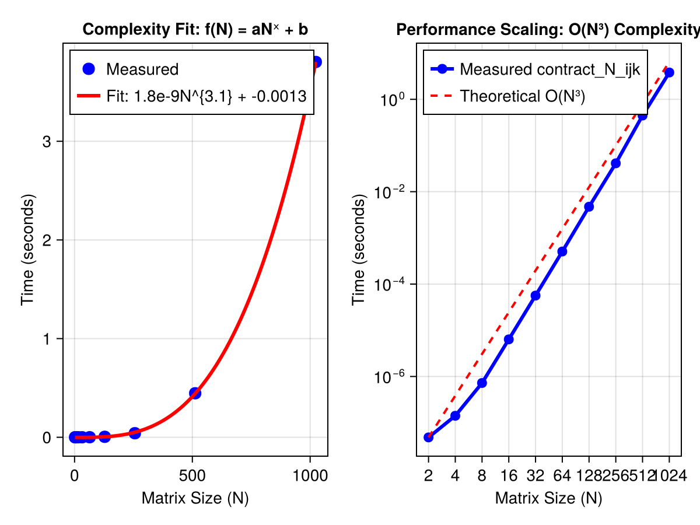

Task 1.5 — Contractions
Generate two random matrices $A, B$ each of size $N \times N$ and calculate the product
\[C_{i,j} = A_{i,k} B_{k,j},\]
for a reasonable range of $N$ (this should still run in a reasonable amount of time).
A workaround to ensure that the data can be read during local testing as well as pages deployment build
DATA_ROOT = normpath(joinpath(@__FILE__, ".."));A naive implementation employs a explicit triple loop to individually compute the scalar multiplications and additions required to get the values of the resulting matrix. This straightforward approach can be specified in the form of a pseudocode algorithm (Anonymous, 2009):
1 n = A.rows
2 let C be a new n × n matrix
3 for i = 1 to n
4 for j = 1 to n
5 c_ij = 0
6 for k = 1 to n
7 c_ij = c_ij + a_ik · b_kj
8 return CCompare the run-time of the two approaches, as well as their scaling in $N$. Plot time vs. $N$ and try to fit
\[f(N) = aN^x + b\]
What do you observe?
using BenchmarkTools
using Qritical
using CairoMakie
Ns = [2, 4, 8, 16, 32, 64, 128, 256, 512, 1024]
results = []
for N in Ns
# We use 'setup' to prepare data.
bench = @benchmarkable contract_N_ijk($N, A=in_data[1], B=in_data[2], C=in_data[3]) setup = (
in_data = setup_size_N_rand_input($N)
)
# Run the benchmark
# run() returns a Trial object; we take the median time in seconds
t = median(run(bench)).time / 1e9
push!(results, t)
println("N = $N: Completed in $t s")
endN = 2: Completed in 4.8e-8 s
N = 4: Completed in 1.41e-7 s
N = 8: Completed in 7.23e-7 s
N = 16: Completed in 6.357e-6 s
N = 32: Completed in 5.6409e-5 s
N = 64: Completed in 0.000507207 s
N = 128: Completed in 0.004724875 s
N = 256: Completed in 0.041163096 s
N = 512: Completed in 0.44587857 s
N = 1024: Completed in 3.803829286 s
Curve Fitting
using LsqFitDefine the model: p[1]=a, p[2]=x, p[3]=b
@. model(n, p) = p[1] * n^p[2] + p[3]model (generic function with 1 method)Initial guess: a small value for a, 3 for exponent x (since it's ijk loop), 0 for b
p0 = [1e-9, 3.0, 0.0]
fit = curve_fit(model, Ns, results, p0)
a, x, b = coef(fit)
fig = Figure();
ax_1 = Axis(
fig[1, 1];
title="Complexity Fit: f(N) = aNˣ + b",
xlabel="Matrix Size (N)",
ylabel="Time (seconds)",
)Makie.Axis with 0 plots:
Scatter the measured points
scatter!(ax_1, Ns, results; color=:blue, markersize=15, label="Measured")Makie.Scatter{Tuple{Vector{GeometryBasics.Point{2, Float64}}}}Smooth line for the fitted curve
Ns_smooth = range(minimum(Ns), maximum(Ns); length=100)
lines!(
ax_1,
Ns_smooth,
model(Ns_smooth, [a, x, b]);
color=:red,
linewidth=3,
label="Fit: $(round(a, sigdigits=2))N^{$(round(x, digits=2))} + $(round(b, sigdigits=2))",
)
axislegend(ax_1; position=:lt)Makie.Legend()Comparing with theoretical reference log axes visualization Setup the Axis with Log10 scaling
ax_2 = Axis(
fig[1, 2];
title="Performance Scaling: O(N³) Complexity",
xlabel="Matrix Size (N)",
ylabel="Time (seconds)",
xscale=log10,
yscale=log10,
xgridvisible=true,
ygridvisible=true,
xticks=Ns,
)
line_measured = scatterlines!(
ax_2,
Ns,
results;
color=:blue,
linewidth=3,
markersize=12,
label="Measured contract_N_ijk",
)Makie.ScatterLines{Tuple{Vector{GeometryBasics.Point{2, Float64}}}}Anchor the reference line to the first data point for comparison
ref_O3 = [results[1] * (n / Ns[1])^3 for n in Ns]
line_ref = lines!(
ax_2, Ns, ref_O3; color=:red, linestyle=:dash, linewidth=2, label="Theoretical O(N³)"
)
axislegend(ax_2; position=:lt)Makie.Legend()fig
FIG_PATH = normpath(joinpath(DATA_ROOT, "contraction_bench.png"))
save(FIG_PATH, fig)
Notes
On most computers there is a sizable difference between real and complex arithmetic. But no such distinction is made in what is given below.
Matrix multiplication is nothing but a special scenario of the more general operation of tensor contraction (Shaw, 1983). We can use this information to re-cast the required tensor contractions in the form of matrix multiplications which can be performed efficiently on modern computers.
Useful numerics related notes from (Golub and Van Loan, 2013).
If $x, y \in \mathbb{R}^n$, compute the dot product
\[c = x^j y_j\]
c = 0
for i = 1:n
c = c + x[i]*y[i]
end- Involves $n$ multiplications and $n$ additions.
- It is an $O(n)$ operation i.e. it scales linearly with dimension
If $x, y \in \mathbb{R}^n$ and $a \in \mathbb{R}$, then this algorithm overwrites $y_i$ with $y_i + ax_i$.
for i = 1:n
y[i] = y[i] + a*x[i]
end- It is also an $O(n)$ operation
This page was generated using Literate.jl.